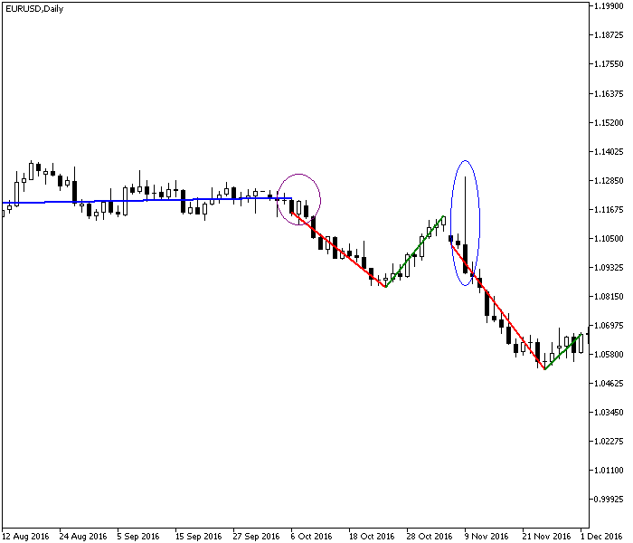
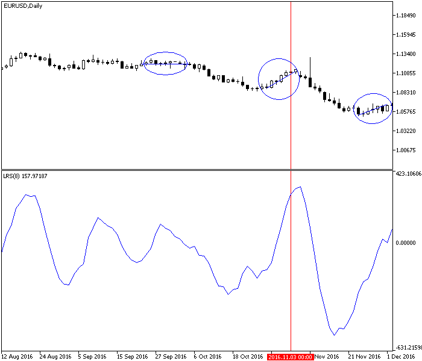
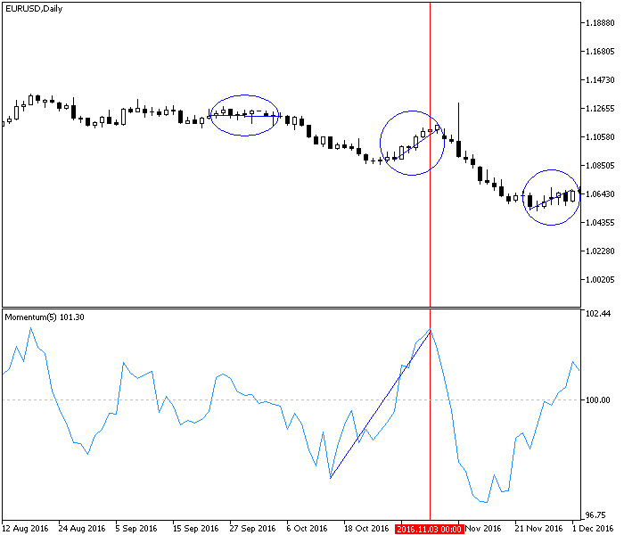
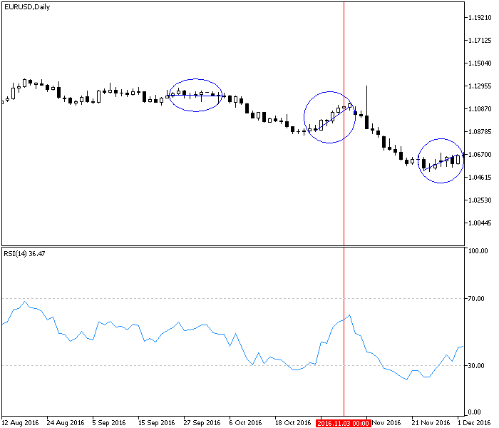
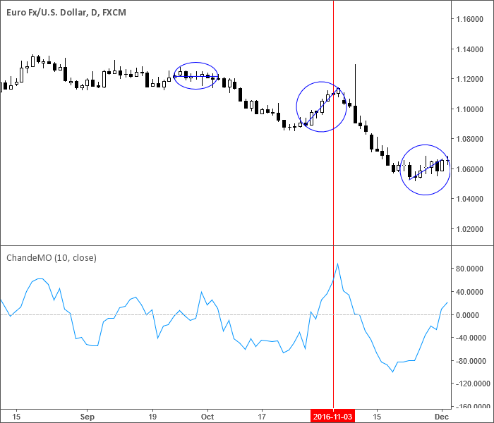

<!DOCTYPE html>
<html>
</html>
<head>
  <meta charset="utf-8">
  <meta http-equiv="X-UA-Compatible" content="IE=edge">
  <title>外汇站（fx-z.com） - 动量</title>
  <meta name="description" content="">
  <meta name="viewport" content="width=device-width, initial-scale=1">
  <meta name="robots" content="all,follow">
  <!-- Bootstrap CSS-->
  <link rel="stylesheet" href="vendor/bootstrap/css/bootstrap.min.css">
  <!-- Font Awesome CSS-->
  <link rel="stylesheet" href="vendor/font-awesome/css/font-awesome.min.css">
  <!-- Google fonts - Roboto-->
  <link rel="stylesheet" href="https://fonts.googleapis.com/css?family=Roboto:400,300,700,400italic">
  <!-- owl carousel-->
  <link rel="stylesheet" href="vendor/owl.carousel/assets/owl.carousel.css">
  <link rel="stylesheet" href="vendor/owl.carousel/assets/owl.theme.default.css">
  <!-- theme stylesheet-->
  <link rel="stylesheet" href="css/style.default.css" id="theme-stylesheet">
  <!-- Custom stylesheet - for your changes-->
  <link rel="stylesheet" href="css/custom.css">
  <!-- Favicon-->
  <link rel="shortcut icon" href="img/favicon.png">
  <!-- Tweaks for older IEs--><!--[if lt IE 9]>
    <script src="https://oss.maxcdn.com/html5shiv/3.7.3/html5shiv.min.js"></script>
    <script src="https://oss.maxcdn.com/respond/1.4.2/respond.min.js"></script><![endif]-->
</head>
<body>
  <div id="all">
    <div class="container-fluid">
      <div class="row row-offcanvas row-offcanvas-left"> 
        <!--   *** SIDEBAR ***-->
        <div id="sidebar" class="col-md-4 col-lg-3 sidebar-offcanvas">
          <div class="sidebar-content">
            <h1 class="sidebar-heading"> <a href="https://fx-z.com">fx-z.com</a></h1>
            <p class="sidebar-p">介绍外汇相关的基本知识，告诉您如何进行自己的技术面和基本面分析，讲解先进的交易理念，并且为您阐述失败交易者与专业交易者之间的真正区别。 </p>
            <p class="sidebar-p">通过这些课程的学习，您将学会如何根据自己的优势来应用情绪分析，还将了解真实世界的事件会对货币汇率产生什么影响，央行在外汇市场中所发挥的作用，以及交易者在颇受欢迎的即期外汇交易中有哪些选择方案。 </p>
            <ul class="sidebar-menu">
                <!-- Link-->
                <li class="sidebar-item"><a href="https://fx-z.com" class="sidebar-link">首页</a></li>
                <!-- Link-->
                <li class="sidebar-item"><a href="cihui.html" class="sidebar-link">外汇词汇</a></li>
                <!-- Link-->
                <li class="sidebar-item"><a href="ebook.html" class="sidebar-link">获取外汇电子书</a></li>
            </ul>
            <p class="social"><a href="https://www.cn-forextime.com/zh?partner_id=4920383" target="_blank"data-animate-hover="pulse" class="external facebook"><i class="fa fa-eur"></i></a><a href="https://www.cn-forextime.com/zh?partner_id=4920383" target="_blank" data-animate-hover="pulse" class="external gplus"><i class="fa fa-gbp"></i></a><a href="https://www.cn-forextime.com/zh?partner_id=4920383" target="_blank" data-animate-hover="pulse" class="external twitter"><i class="fa fa-rmb"></i></a><a href="https://www.cn-forextime.com/zh?partner_id=4920383" target="_blank" title="" class="external instagram"><i class="fa fa-dollar"></i></a><a href="https://www.cn-forextime.com/zh?partner_id=4920383" target="_blank" data-animate-hover="pulse" class="email"><i class="fa fa-money"></i></a></p>
            <div class="copyright text-center text-md-left">
             
              
            </div>
          </div>
        </div>
        <!--   *** SIDEBAR END ***  -->
        <!--   *** DETAIL ***-->
        <div class="col-md-8 col-lg-9 content-column white-background">
          <div class="small-navbar d-flex d-md-none">
            <button type="button" data-toggle="offcanvas" class="btn btn-outline-primary"> <i class="fa fa-align-left mr-2"></i>菜单</button>
            <h1 class="small-navbar-heading"> <a href="https://fx-z.com/8-4.html">下一篇 </a></h1>
          </div>
          <div class="row">
            <div class="col-xl-10">
              <div class="content-column-content">
                <h1>动量</h1>
       <p>
    技术分析的主要目的是判断价格是否形成趋势以及趋势的动量。新趋势的特点是图表上出现价格活动的爆发——新趋势通常始于一系列更高的高点及低点。当图表形态较大且连续出现时，您可以认为上行突破成型并且应该买入。其基本原则是：动量引领方向。
</p>
<p>
    但是您怎样判断图表上的指标是否能带来更多可靠的收益（真正的上涨）呢？该价格变化可能是一次假突破并猝然结束。移动平均线较为可靠，但是基于移动平均线的指标可能需要经过更多时段才能判断出新活动的爆发。寻找优秀的动量指标的原因是，让自己尽早进入交易，同时不被虚假的突破所迷惑。此外，许多外汇交易者在日内时间周期上交易。日内波动性使得对动量的衡量尤为困难。
</p>
<p>
    本课程旨在阐述动量的问题，并且对动量指标进行概述。追求可靠的动量指标已成为技术分析中最优秀的理念之一。首先，您必须从加速、减速方面来考虑动量。按照定义，所有价格将随着时间的变化向前变化，无论向上、向下，还是横盘。如果您没有见到更高的高点和低点——即价格呈水平方向——说明您获得了前进动量，但没有获得加速或减速。而且，正如您开车时可能加大油门以 80 英里时速超车，然后降回平稳的 50 英里时速，价格可能获得短暂的动量，然后又减速。您整个行程的平均时速可能为 60 英里，但时速范围可能从 30 英里跳到 80 英里。
</p>
<p>
    重点在于，当您通过动量获取市场信息时，您不是寻找平均值——您寻找的是临界点。
</p>
<p>
    参阅下图。图中线条为手绘线性回归线，起点位于最低点附近，终点位于最高点或最高点附近（反之亦然）。左侧第一条线（蓝色）几乎水平，说明出现横向整理区，或者市场进入区间盘整状态，且既没有加速、也没有减速。如果仔细观察，您会发现该时段充斥着空头吞噬和多头吞噬蜡烛图。
</p>
<p>
    下一条线向下倾斜（红色）；请注意，它的起点实际上并未开始于最高点，而是开始于 3 线横向整理区（紫圈）。请忽略动量起点，并将注意力集中于斜线的斜率。与蓝线几乎水平的路径相比，这条线的斜率非常重要。这正是我们需要的强斜率。但这个斜率非常短暂，而且价格发生意外逆转（绿线）。这一走势的高点未能超过之前区间盘整交易区域（红色下行走势的起始位置）的高点。该走势也非常短暂。接下来又是一个红色下行走势，但它被一个异常的峰值高点打断（蓝圈）。这条线的斜率甚至比前一个下行走势的斜率更大，说明它受到了更强的市场情绪推动，而且这种情绪可能让走势消亡殆尽。果然，价格在十字星上到达最低点，而且走势方向再次改变、掉头向上，尽管它的斜率小于前一个绿色上行走势。
</p>
<p>
     动量通过相关线性回归线斜率显示。
</p>
<p>
    线性回归的相对斜率能够正确测量加速和减速。如果我们只需确定要使用什么参数（在测量中包括多少数据点）以及线性回归线的起点、终点，那么这种相对斜率将是世界上最好的指标。但如果我们绘制线性回归斜率的连续移动平均线，那么我们得到的图表将缺乏视觉效果，而且难以解读。
</p>
<p>
    以下图表显示 8 时段线性回归斜率。圈 2 中首个上行走势显示斜率较强，但圈 3 中第二个上行走势的斜率看上去同样强劲，但此时的走势显然看起来远远不够强劲通过将最低点与最高点连接起来以手绘线性回归线，我们可在主窗口的图表主体上得到不同的斜率，但采用固定时段数量的斜率指标并不能显示这些区别。
</p>
<p>
     用线性回归斜率指标来衡量动量
</p>
<p>
    我们需要采用别的方法来衡量动量最基本的动量衡量方法是，用最终价格除以 X 个时段以前的价格。下图中，动量指标建立在 5 天（标准参数为 12 天）的基础之上。这为我们带来了底部窗口的动量指标。请注意，该指标首先在整整 6 个棒形图内上涨，然后才到达圈 2 中真正的最低点（由垂直红线标记）。在圈 3 中，动量指标先在 7 个棒形图内上涨，然后再到达最低点。
</p>
<p>
     动量指标预测价格趋势的变化。
</p>
<p>
    许多新手认为他们发现了动量指标中的圣杯。这种指标不仅在价格上涨时上升，还在价格开始上涨之前上升。
</p>
<p>
    但是它有一个与斜率测量相同的问题。您应该在这个动量指标中设置多少时段呢？您可以不停地进行回测以找到最佳参数，而且指标仍可能在市场情绪变化时给出错误的信号。有些时段的价格变化较大，而有些时段的价格变化较小。价格变化的“幅度”随着时间发生改变。大幅变化与小幅变化可能产生相同的趋势，但太短的动量指标会导致您过早地退出连续的走势，而太长的动量指标会延误您进入一个更小的图表趋势。
</p>
<p>
    一个解决方案是测量变化率的比例。通过额外测量变化程度可以让变化率与动量相同。在此处的图表中，中线被标记为 100，即 100%。当指标围绕 100 线波动时，这意味着今日价格几乎等于或完全等于 X 天前的价格。当指标上升至 102 时，您得到的价格比缺少动量的价格高 2%。不同的图表组合将通过零线或 100% 线来显示该信息。
</p>
<p>
    我们知道价格永远不会无限地沿直线变化。有些点位的交易量非常大——可能被超买，也可能被超卖。交易者获利了结，结束趋势，或者只是由于其他原因而重新考虑自己的头寸。前一个图表中，超买位置被判断为 102 附近，超卖位置被判断为 97 附近。大部分图表软件允许您绘制水平线，以标记您认为的价格超买或超卖位。&nbsp;&nbsp;
</p>
<p>
    这将我们引导至相对强弱的理念，即内部相对强弱，而不是一种证券与另一种证券相比的强弱。RSI（相对强弱指数）由 Welles Wilder 于 1978 年在《交易系统新理念》一书中提出。将 RSI 作为过气指标而抛弃之前，请仍将它作为当今使用最为频繁的指标之一；这不仅是因为它集成了超买/超卖的理念。
</p>
<p>
    RSI 将在单独的课程中进行讨论。
</p>
<p>
    将相对强弱指数作为动量衡量指标的重要操作是为它设置如下图所示的内置超买/超卖位。RSI 是指固定时段内平均上涨天数与平均下跌天数的比例。RSI 以及所有动量指标的问题是“参数问题”——即您为公式设置多少时段？
</p>
<p>
     通过相对强弱指数来衡量动量
</p>
<p>
    另一个动量指标采用近期高低点区间的相对价格，即《新技术交易者》一书中提出的钱德动量摆动指标。与 RSI 类似，钱德动量摆动指标采用上涨天数与下跌天数之间的区别，但它的算法更为复杂——您将所有上涨天数的价格相加，并减去所有下跌天数的价格，然后除以这两种天数的所有价格。请参阅以下图表。数学家指出，将上涨、下跌天数同时纳入分子扩大了测量范围，使它对大幅价格变动更加敏感。
</p>
<p>
     通过钱德动量摆动指标来衡量动量
</p>
<p>
    与 RSI 相似，钱德动量摆动指标被转换为百分比，所以零线附近的价格没有获得动量，而上涨至 +50 附近的价格被超买（-50 标记超卖）。将动量转换为百分比的优点是可以摆脱原始动量中的参数问题——小图形的走势斜率可能与大图形的走势斜率相同，而且摆动指标也在其发挥作用的过程中传递着这样的观点。
</p>
<p>
    如果我们使用动量的目的是发现趋势是加速还是减速，或者价格是否触及可能的止损点（超买/超卖），那么我们可以采用 MACD、随机震荡指标甚至布林线。在所有情况下，我们发现突然加速的次数有限，而且通常较为短暂。加速可能会继续，也可能不会，具体取决于价格是否被超买/超卖。这有助于我们将参数削减至最适合我们使用的时间周期的数量，但不要忘记，对超买/超卖的估计通常是错误的。
</p>
<p>
    当价格走势加速/减速时，通过这四种动量测量方法得出的动量指标将提醒您改变方向，而且这种提醒有时会提前一个时段。动量引领方向。尽管如此，聪明的交易者还观察图表本身的其他迹象，例如第一个横向整理区是否出现许多多头吞噬、空头吞噬蜡烛图，以及第一个横向整理区中间的上行走势何时试图触及并超过前一个高点但未遂。
</p>
<p>
    您可以将动量作为一种独立的交易系统，但如果您这样操作，您还应该结合其他指标，例如形态和蜡烛图等。大多数指标将动量作为一种验证指标。
</p>
<p>
    <br/>
</p>
<p>
    <br/>
</p>
              </div>
            </div>
          </div>
        </div>
      </div>
    </div>
  </div>
  <!-- JavaScript files-->
  <script src="vendor/jquery/jquery.min.js"></script>
  <script src="vendor/popper.js/umd/popper.min.js"> </script>
  <script src="vendor/bootstrap/js/bootstrap.min.js"></script>
  <script src="vendor/jquery.cookie/jquery.cookie.js"> </script>
  <script src="vendor/owl.carousel/owl.carousel.min.js"></script>
  <script src="vendor/masonry-layout/masonry.pkgd.min.js"></script>
  <script src="js/front.js"></script>
</body>